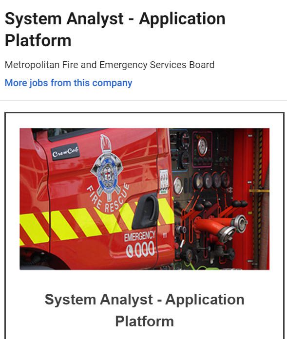

Ethan Nicholas

s3719396: S3719396@student.rmit.edu.au. My name is Ethan Nicholas i am australian born with a
backround in both Thrilankan and Timorese. My parents currently reside in the country side, of whcih i had spent
half my life at, thus one could say im half city and country kid. Currently im look ing for a cute cat
that does not give me allergies and my favourite sport has to be snowboarding!!!
.
Me and IT!!
My interest in IT is a rather new one only really coming to light last year.
I had always been interested in gaming, as it is a hobby of mine, and game making since it is a rather creative and fun thing to do.
Being able to create your own world that can be interacted with and providing that kind of experience to others really appealed to me,
however, confronted with the fact it was competitive and not strong at all in the Aus I never really considered it a real option.
Since finding out I didn’t like science anymore as a result of just doing it too much i decided to try IT, realising that my time would be
better spent in a job I enjoy.
my ideal job

https://www.seek.com.au/job/39924823?searchrequesttoken=c3a0c3f5-97e5-41ee-a1e5-0c3fa3108260&type=promoted
A system analyst is a person whom uses there vast knowledge of IT to create, modify and improve systems for verious types of buisnessses, the reason that I want to learn it is largly due to, the strong problem solving nature of the job, and its need to create strong buisness knowledge.
It also has flexable working hours as well as a lot of versalitliy, essentailly applicaple to any existing buisness. to become a buisness analyst I'd need 2 things, IT, more specifically programming knoweldge, and buisness knowledge.
this is due to this job woking very heavily in conjunction with both areas and while i will not nessaserily be doing either part personally, it is my job to keep both halvrs in sync.
the quilifications i need is also mainly experience and university, which is how my plan will go as well. I will finish my university first, then afterward, imidiantly begin job hunting for jobs that involve a lot of programming, possibly in smaller buisneses so that i can get a much more personaly backround in buisness studies
after amassing 5 years of experiecnce i will, finially look into getting those jobs.
My Personal Profile.
this test indicates that I am the kinda of personalityh that trys to lead, make desicions and be more assertive, im an exrtovert which means that i focus largly on maintaining team synergy
i think this will mean that i try and take more of the centre roles in the team, having as big an influence as i can on them.
i should focus on team members that are less asertive, so that i can gell well with them, and listen to other assertive opinions.
 as a visual learner i will take many diogram based notes during our team discussions and share them with other members with similar learning patters.s
it would be good to form a team of visual learners to make this effective as possible
as a visual learner i will take many diogram based notes during our team discussions and share them with other members with similar learning patters.s
it would be good to form a team of visual learners to make this effective as possible
 this tests indicates that i am bpth left and right brained, but not specific at either. this gives me a large support role, becuase as a jack of all trades i do better supporting people who are more orientated to one brain or the other.
this tests indicates that i am bpth left and right brained, but not specific at either. this gives me a large support role, becuase as a jack of all trades i do better supporting people who are more orientated to one brain or the other.